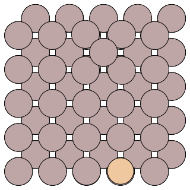

Running a Parallel Replica Job¶
A sample parallel replica simulation can be found in the directory:
examples/parallel-replica/. Two input files config.ini and pos.con are
required for eOn simlution.
The example system is the diffusion of an Al adatom on the Al(100) surface. A snapshot of the system is given below:

Al adatom on the Al(100)¶
The config.ini file will run a parallel replica job with 2 replicas on one local core.
[Main]
job = parallel_replica
temperature = 500 ; temperature of the MD simulations
random_seed = 1024
[Potential]
potential = eam_al ; embedded atom method potential for aluminum
[Communicator]
type = local ; run the client locally
client_path =../../client/client ; $PATH for the client binary
number_of_cpus = 1 ; number of jobs to run locally
num_jobs = 2 ; total number of trajectories to run
[Dynamics]
time_step = 2.0 ; timestep of the MD simulation (in fs)
time = 12000.0 ; total number of MD steps to run
thermostat = andersen ; Andersen thermostat with Verlet algorithm
andersen_alpha = 0.2 ; collision strength in the andersen thermostat
andersen_collision_period = 10.0 ; collision period of andersen thermostat (in fs)
[Parallel Replica]
dephase_time = 200 ; number of steps used to decorrelate the replica trajectories.
state_check_interval = 3000 ; number of steps between quanches to check if a new state is found
state_save_interval = 200 ; number of steps recorded to a buffer array to refine the transition time
post_transition_time = 200 ; number of additional MD steps run after a new state is found
stop_after_transition = false ; flag to stop the job when a new state is found
[Optimizer]
opt_method = cg ; use the conjugate gradient optimizer
converged_force = 0.005 ; stop optimizations when the max force per atom reaches 0.005 eV/A
Now we can run the trajectory by executing the command python -m eon.server
eOngit/examples/parallel-replica via 🅒 eongit
➜ python -m eon.server
Eon version: 1321976b
Simulation time: 0.000000e+00 s
State list path does not exist; Creating: .//states/
Registering results
Processed results: 0
Time in current state: 0.000000e+00 s
Simulation time: 0.000000e+00 s
Queue contains: 0 searches
Making: 2 searches
Job finished: .//jobs/scratch/0_0
Job finished: .//jobs/scratch/0_1
Created: 2 searches
Then use the -n flag to register the result::
eOngit/examples/parallel-replica via 🅒 eongit
➜ python -m eon.server -n
Eon version: 1321976b
Simulation time: 0.000000e+00 s
Registering results
Found transition with time: 5.000e-12 s
Cancelled 0 workunits from state 0
Processed results: 0
Currently in state: 1
Time in current state: 0.000000e+00 s
Simulation time: 5.000000e-12 s
Queue contains: 0 searches
Making: 0 searches
Information from the trajectory is written in the dynamics.txt file:
➜ cat dynamics.txt
step-number reactant-id process-id product-id step-time total-time barrier rate energy
-----------------------------------------------------------------------------------------------------------------------------
0 0 0 1 5.000000e-12 5.000000e-12 0.000000 0.000000e+00 -472.909569
More information is obtained by running a few more times:
➜ for i in {0..2}; python -m eon.server; done
Eon version: 1321976b
Simulation time: 5.000000e-12 s
Registering results
Processed results: 0
Time in current state: 0.000000e+00 s
Simulation time: 5.000000e-12 s
Queue contains: 0 searches
Making: 2 searches
Job finished: .//jobs/scratch/1_2
Job finished: .//jobs/scratch/1_3
Created: 2 searches
Eon version: 1321976b
Simulation time: 5.000000e-12 s
Registering results
Found transition with time: 2.000e-12 s
Cancelled 0 workunits from state 1
Processed results: 0
Currently in state: 2
Time in current state: 0.000000e+00 s
Simulation time: 7.000000e-12 s
Queue contains: 0 searches
Making: 2 searches
Job finished: .//jobs/scratch/2_4
Job finished: .//jobs/scratch/2_5
Created: 2 searches
➜ python -m eon.server -n
Eon version: None
Simulation time: 7.000000e-12 s
Registering results
Found transition with time: 3.000e-12 s
Cancelled 0 workunits from state 2
Processed results: 0
Currently in state: 3
Time in current state: 0.000000e+00 s
Simulation time: 1.000000e-11 s
Queue contains: 0 searches
Making: 0 searches
➜ cat dynamics.txt
step-number reactant-id process-id product-id step-time total-time barrier rate energy
-----------------------------------------------------------------------------------------------------------------------------
0 0 0 1 5.000000e-12 5.000000e-12 0.000000 0.000000e+00 -472.909569
1 1 0 2 2.000000e-12 7.000000e-12 0.000000 0.000000e+00 -472.909577
2 2 0 3 3.000000e-12 1.000000e-11 0.000000 0.000000e+00 -472.909572
Detailed information of the simulation is stored in the folder states. where
the geometric and energy of the visited states are stored in the sub-folder
labeled as state id. You can find the geometric of the prodcut in
states/1/reactant.con/, a snapshot is shown below:

Al adatom on the Al(100)¶
Compared to the reactant geometric, we can tell that the transition we found follows the exchange mechanism.
Adding Hyperdynamics¶
You can turn on the hyperdynamics method by adding the following section to your config.ini file:
[Hyperdynamics]
bias_potential=bond_boost ; bond_boost bias potential
bb_boost_atomlist=20,26,50,56,150 ; atoms that are boosted in the bias potential
bb_rcut=3.0 ; boost radius
bb_rmd_time=100.0 ; MD time to obtain the equilibrium configuration
bb_dvmax=0.4 ; magnitude of the bond-boost bias potential
bb_stretch_threshold=0.2 ; defines the bond-boost dividing surface
bb_ds_curvature=0.95 ; curvature near the bond-boost dividing surface, it should be <= 1; a value of 0.9-0.98 is recommended
All other settings and output infomation are as in a regular parallel replica dynamics simulation.